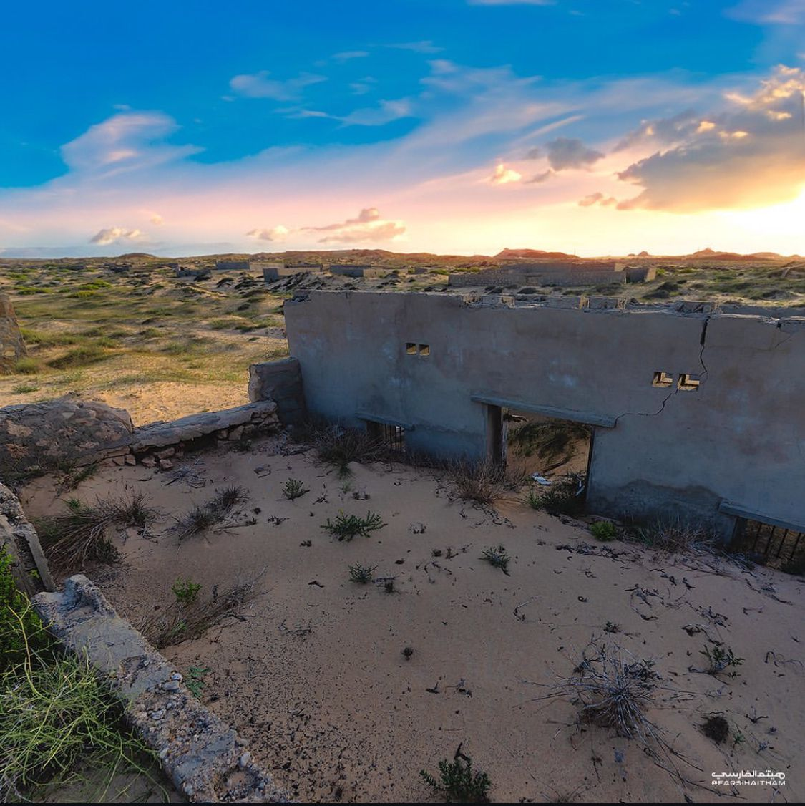

اكتشفوا جمال الطبيعة وسحر التراث في واحدة من أجمل ولايات سلطنة عمان.
تقع ولاية جعلان في محافظة جنوب الشرقية بسلطنة عمان، وهي تتميز بتاريخها العريق وتراثها الغني الذي يعكس الأصالة والتنوع الثقافي. تعتبر جعلان وجهة سياحية بارزة تجمع بين الطبيعة الساحرة والمعالم الأثرية التي تحكي قصص الأجيال الماضية.
تشتهر الولاية بوجود العديد من الأودية الخصبة مثل وادي البطحاء، والمعالم التاريخية مثل حصن جعلان. كما تتميز بتراثها الحرفي الذي يشمل النسيج والفخار وصناعة السيوف، مما يجعلها مقصدًا للزوار المهتمين بالثقافة والتقاليد العمانية.
منظر لأطلال قديمة في ولاية جعلان، يعكس التاريخ العريق للمنطقة وسط الطبيعة الخلابة، حيث تمتزج الآثار مع الرمال والنباتات البرية في مشهد مليء بالهدوء والجمال.
ولاية جعلان تعد مركزًا للفنون والحرف التقليدية، كما أنها موطنٌ لعدد كبير من الفعاليات الثقافية والمهرجانات التي تجذب الزوار من مختلف أنحاء البلاد.
تتمتع الولاية بموقع استراتيجي يجعلها نقطة التقاء للعديد من القوافل التجارية قديمًا، مما ساهم في تطور ثقافتها وتنوعها.